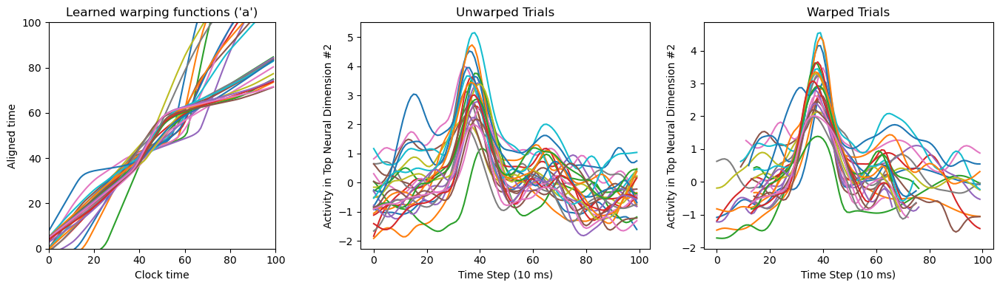
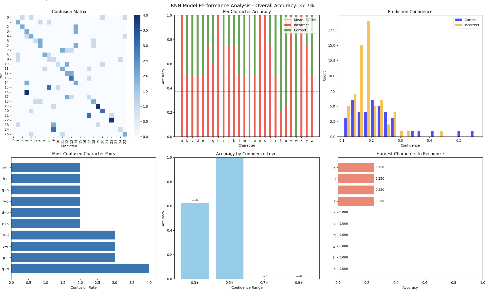
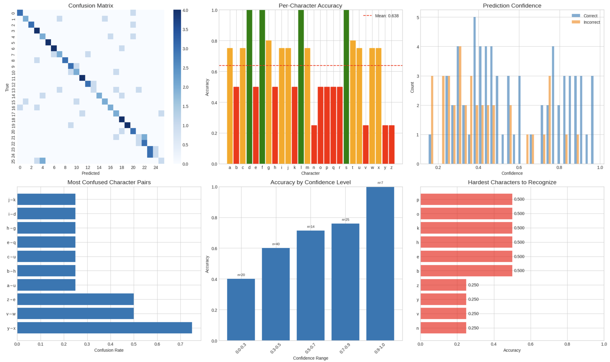

Built and benchmarked two deep learning architectures — a GRU-based RNN and a Temporal Convolutional Network — to decode handwritten characters from 192-channel intracortical motor cortex recordings. Handled the full pipeline: signal preprocessing, temporal alignment, model design, training, and cross-session generalization analysis.
Raw recordings came from participant T5, a person with C4 spinal injury, using two implanted 96-channel Utah arrays during a cued handwriting task. The signals required substantial preprocessing before any model could learn from them: baseline drift correction using per-block firing rate statistics, global variance normalization, and Gaussian smoothing to reduce high-frequency noise while preserving temporal structure.
The hardest preprocessing step was temporal alignment. Different trials of the same character had variable movement onset timing, which scrambles the time-series signal that the model is supposed to learn. I applied Time-Warped PCA (TWPCA) to align trials onto a shared time axis by learning smooth, monotonic warp functions per trial, compressing or stretching each trial's timeline to match a canonical template. This significantly reduced trial-to-trial variability and gave the models cleaner input.

The TCN reached 64.2% within-session accuracy against the RNN's 37.7% — a meaningful gap that comes from the TCN's dilated causal convolutions capturing multi-scale temporal patterns in parallel, while the GRU processes step-by-step and struggles with the small dataset size. The TCN also ran inference at 0.45 ms/sample versus 3.3 ms/sample for the RNN, a 7× speed advantage that matters for real-time BCI deployment.
But the more important finding is the cross-session collapse. Both models fell to ~9% accuracy on held-out sessions — near chance. This isn't a modeling failure, it's a data problem: intracortical signals drift day-to-day as electrode-tissue interfaces evolve. The statistical properties the model learned on Monday don't hold on Friday. No architecture solves this without either per-session recalibration or explicit domain adaptation. That gap — from 64% to 9% — is the actual frontier of clinical BCI deployment.


Our comparison of TCN and RNN architectures for neural handwriting decoding reveals that both approaches face severe cross-session generalization challenges when evaluated without temporal alignment, emphasizing the importance of domain alignment in neural decoding and BCI development. While the TCN offers computational advantages, achieving robust neural decoding for real-world BCI applications will require addressing the fundamental non-stationarity of intracortical signals through preprocessing, architectural innovations, or adaptive calibration strategies.
Full Report — Neural Handwriting Decoding PDF · USC · 2025